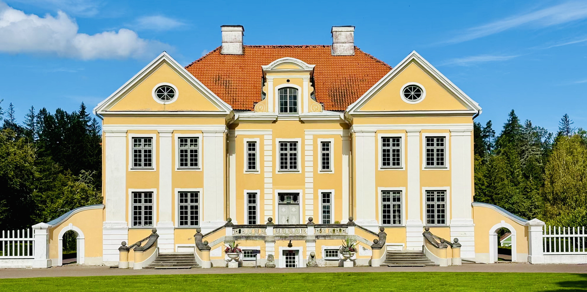
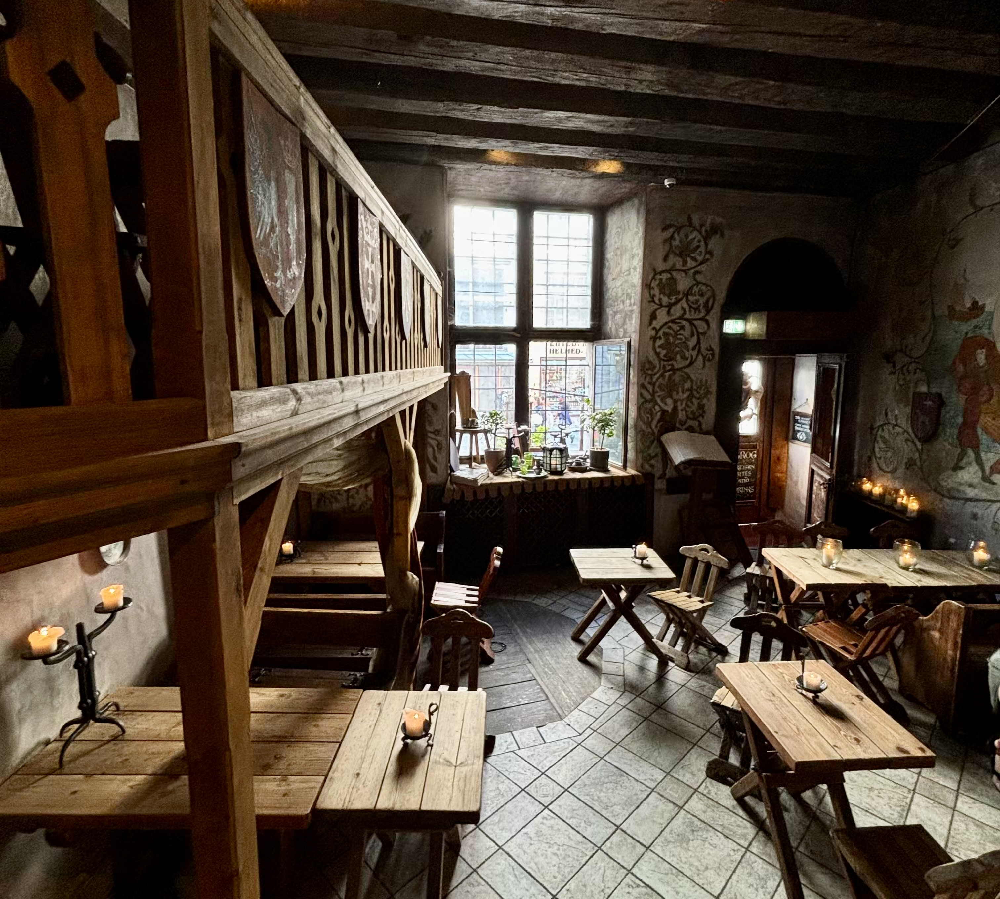
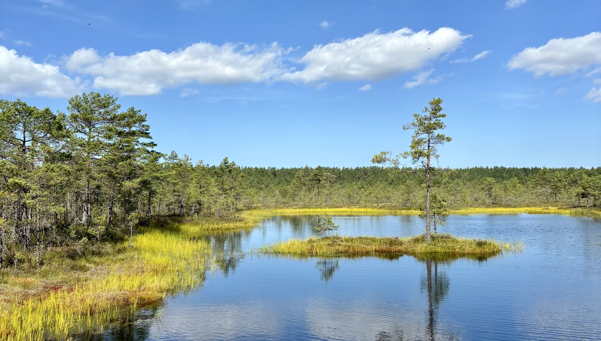
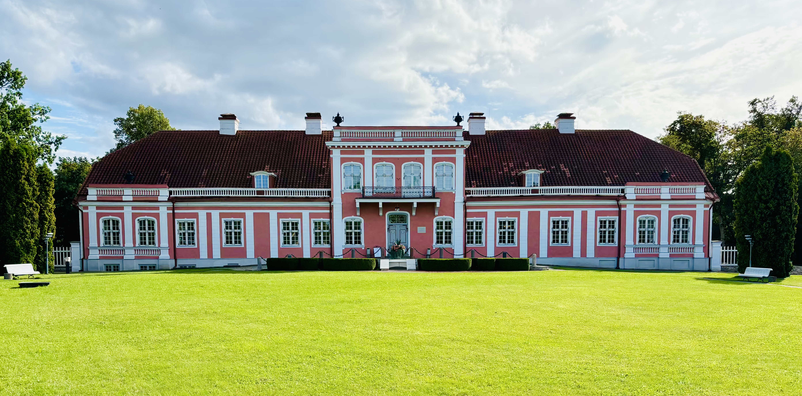
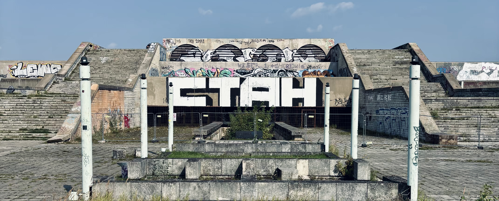
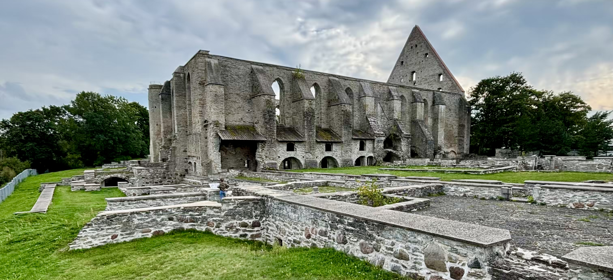
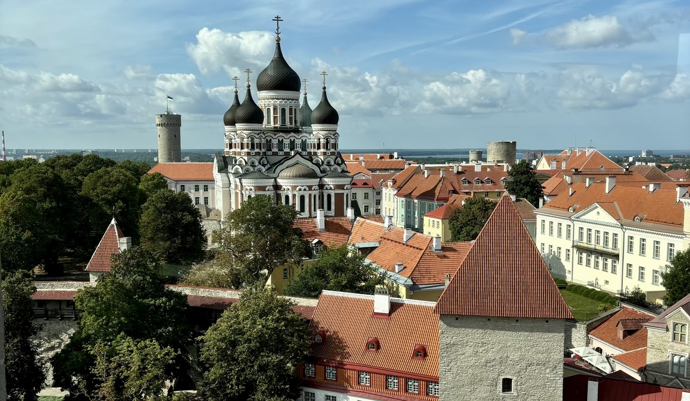
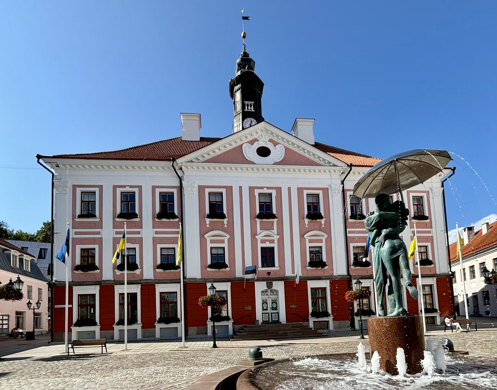
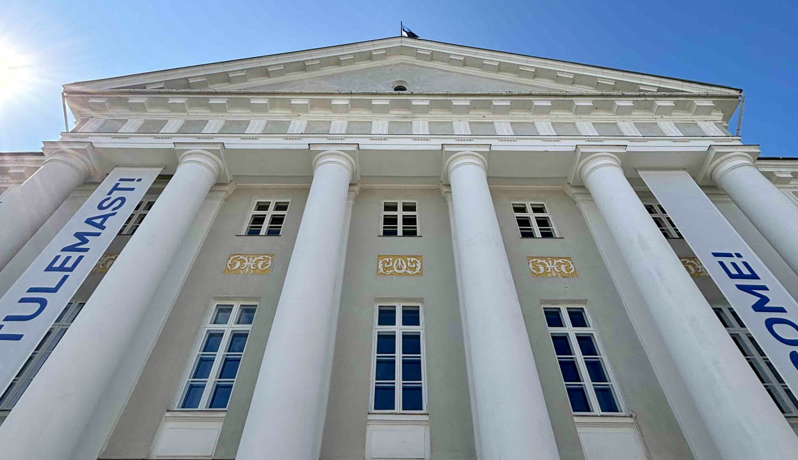
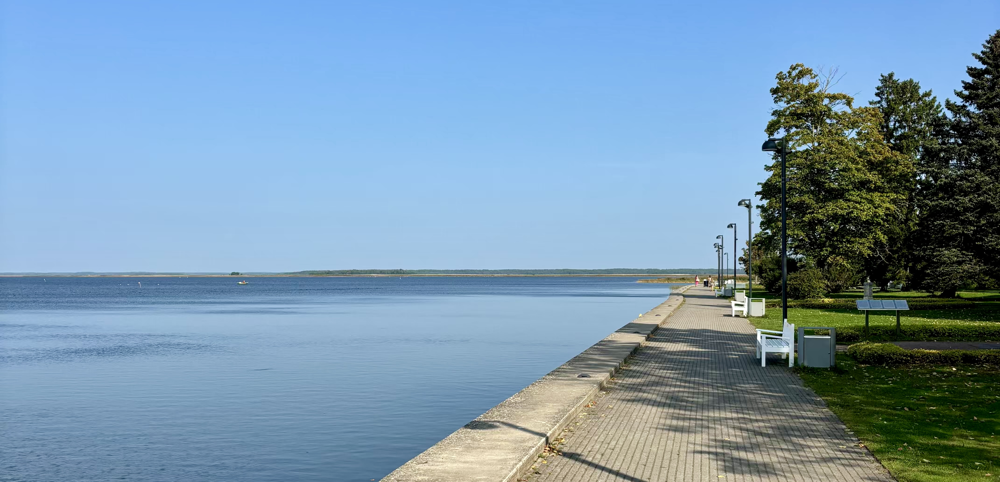

Estonsko srpen 2024

Už nějaký ten rok říkám, že léta na jižní Moravě jsou na můj vkus moc teplá a nejraději bych na prázdniny odjel někam, kde nebudu tolik trpět. Na jaře jsem proto toto téma znovu několikrát otevřel a snažil se ostatní členy naší malé rodinky přesvědčit o tom, že v jiných destinacích si léto užijeme mnohem více než v Brně. Bohužel se mi to úplně nepodařilo.
Zprvu mi bylo řečeno, že na celé léto určitě nikam nepojedeme, protože by nám doma zdechly kytky. Chápu. Navrhl jsem proto, abychom do zahraničí jeli alespoň na dva týdny, a to s tím, že jsem očekával, že z dané destinace budeme celou dobu pracovat, abychom si nemuseli brát žádnou dovolenou. V protinávrhu stálo, že dva týdny by klidně šly, ale museli bychom na místě jeden týden cestovat a jeden týden pracovat, abychom také stihli z dané země něco vidět. Souhlasil jsem. Po nějaké době ale přišel zvrat. Klára řekla, že nechce pouze týden pracovat odjinud než z domu, protože jí to nestojí za balení všech pracovních věcí, a tak moje vysněná cesta za chladným létem dopadla tak, že jsme vyrazili na dovolenou do Estonska. Na týden. A na konci srpna, kdy už léto bylo skoro za námi a v Estonsku říkali, že u nich už začal podzim! 😿
DEN 0 (tentokrát bude krátký)
Protože nám letadlo z Vídně letělo v sobotu brzy ráno, vyrazili jsme do Rakouska už v pátek večer a přespali v hotelu na letišti.
DEN 1
Budík nás probudil ve 4 hodiny. Na hotelu jsme se moc nezdržovali. Jen jsme si sbalili věci, udělali check-out a zamířili na letiště. Tam jsme prošli bezpečnostní kontrolou a v 6 hodin už jsme seděli v letadle do Tallinnu.
První hodinu letu jsem prospal. Tu druhou jsem se snažil usnout, ale moc mi to nešlo. A nepomohla tomu ani paní v důchodovém věku, které se asi 30 minut před přistáním udělalo špatně. Nejdříve jsem si všiml, jak si paní stoupla do uličky a začala se přidržovat jiné, o dost mladší paní stojící hned vedle ní. V tu chvíli už bylo vidět, jak paní bledne a začíná se kácet k zemi. Paní se natáhla v uličce a protože to není zase tak obvyklé, ostatní cestující hned začali křičet: “Help!” Jen aby bylo jasno, nezpívali známou píseň od Beatles, ale snažili se přivolat palubní posádku. Přestože se k sedadlům v 15. řadě seběhla celá crew, ani jeden z členů nevypadal, že by věděl, co dělat. Někdo donesl vodu, jiní jen stáli a přihlíželi. O pár minut později už ale ostatní cestující pomáhali paní vstát a sednout si zpět na její sedadlo. Naštěstí se tedy nic vážného nestalo a my tak kolem 9. hodiny místního času přištáli na tallinnském letišti se stejným počtem pasažérů, se kterým jsme opouštěli Vídeň!
V malém bistru na letišti jsme si dali snídani, poté si vyzvedli auto v půjčovně Sixt a jeli na hotel, nebo lépe řečno “před hotel”, kde jsme pouze zaparkovali auto a potom vyrazili do víru (velko)města. Přestože centrum bylo vzdálené asi 1.5 km, cesta nám zabrala skoro 2 hodiny. Hned za naším hotelem se totiž nacházel Telliskivi Loomelinnak, obrovský komplex bývalých továren, z něhož se stala hipsterská chlouba města. Dnes se v rozsáhlém areálu nachází butiky s lokálními výrobky, restaurace, kavárny a galerie. V jedné z restaurací s názvem F-Hoone jsme si dali výborný oběd a poté si prohlédli malé obchůdky nacházející se v bludišti bývalých továrních budov.
Když jsme dorazili do centra, dostali jsme chuť na kávu, proto Klára nažhavila European Coffee Trip a vybrala jednu z mála tallinnských kaváren v aplikaci. Cesta měla zabrat pár jednotek minut. Nakonec jsme tam ale šli spíše pár desítek minut. Důvodem prý bylo, že se “navigace ztratila”. Návštěva kavárny se nakonec prodloužila ještě víc, a to čekáním na volnou toaletu. Kávu a zákusek jsme dojedli relativně rychle. Chvíli před tím, než jsme ale chtěli odejít, odešla na jedinou toaletu v kavárně jediná paní baristka, která měla na starost obsluhu všech hostů. Když už byla paní na toaletě dobrých 20 minut, přišli za námi nešťastní zákazníci, kteří měli tu smůlu, že dorazili do kavárny těsně po tom, co si paní baristka “odskočila”, a ptali se nás, zda nevíme, kde je obsluha. Když jsme jim řekli, že obsluha je na toaletě, paní se zasmály, otočily na podpatku a odešly. V tom okamžiku bylo slyšet, že je na toaletě nějaký pohyb. Po chvíli se ozvalo spláchnutí a poté se otevřely dveře a ze záchodu vyšla obsluha.
Když jsme vyšli z podniku, rozhodli jsme se vyšlápnout kopec Toompea v historickém centru města. Na něm se nachází budova parlamentu, pravoslavný chrám svatého Alexandra Něvského, několik dalších méně významných kostelů a také hromada vyhlídkových plošin nabízejících nádherné pohledy do širokého okolí hlavního města Estonska.
Po procházce městem jsme se zastavili na rychlou večeři v moderní tržnici Balti Jaama Turg a poté se šli ubytovat na náš hotel.
DEN 2
Přestože jsme v průběhu našeho prvního dne v Tallinnu viděli skoro celé historické centrum města, věděli jsme se, že o památkách, které jsme viděli, nic nevíme. Proto jsme se rozhodli, že po snídani vyrazíme do centra města znovu a podíváme se na všechny památky znovu s knižním průvodcem v ruce.
Prohlídka města začala na ulici “Dlouhá noha”, delší ze dvou pěších cest na kopec Toompea. Na jejím konci nás přivítalo Hradní náměstí a nádherný pohled na chrám svatého Alexandra Něvského, jeden ze symbolů města. Z náměstí jsme se vydali do Guvernérské zahrady, kde stojí další z dominant města, a to věž Dlouhý Heřman. Tradice říká, že pokud někdo vyvěsí na věž svoji vlajku, bude Estonsku vládnout. V únoru roku 1989 zde byla namísto rudé vlajky SSSR vyvěšena estonská vlajka s bílým, černým a modrým pruhem, což je považováno za jedno z nejodvážnějších gest při boji Estonska za nezávislost. Od té doby na věži Dlouhý Heřman vlaje estonská vlajka každý den.
Ze zahrad jsme se přemístili do poměrně dost nudných podzemních chodeb pod hradem Toompea, které ve 20. století sloužily jako protiatomový kryt. Nebylo tam zrovna velké teplo a ani nic moc zajímavého k vidění.
Když jsme vyšli ven, zamířili jsme se trošku ohřát do středověké krčmy s názvem Olde Hansa. Tam jsme si kromě vynikajícího jídla objednali i skořicové pivo, které na mě působilo trošku víc, než jsem původně čekal. Možná to bylo i tím, že jsem dopíjel to Klářino. Restaurace se nachází na Radničním náměstí v samém srdci Tallinnu, takže by se mohlo zdát, že se jedná o typickou past na turisty. Jak ale říká náš průvodce - bez návštěvy Olde Hansa by nebyla návštěva Tallinnu kompletní. 😁

V restauraci Olde Hansa měl člověk pocit, že se vrátil v čase o několik století zpět.
Po obědě jsme pokračovali v prohlídce Dolního města. Z Radničního náměstí jsme se vydali pasáží Saikang ke kostelu sv. Ducha. Ten stojí na začátku ulice Pikk. Ulice je charakteristická barevnými cechovními domy i skutečností, že na jejím konci stojí Velká pobřežní brána, jedna ze šesti stedověkých bran, které dříve umožňovaly přístup do města. Bránou jsme vyšli ven ze starého města, abychom ji obešli a druhou stranou se zase vrátili. Udělali jsme tak proto, že jsme měli namířeno na nejmalebnější uličku v Tallinnu, neboli pasáž sv. Kateřiny, která pro mě osobně byla spíše zklamáním. Naši procházku městem jsme zakončili na Náměstí svobody, které, přestože stojí hned za hradbami starého města, má naprosto odlišný vibe. A není se co divit. Ještě do roku 2009 fungovalo jako parkoviště. Poté bylo přestavěno do dnešní moderní podoby.
Náročný den jsme zakončili na jídle ve vegetariánské restauraci v našem novém oblíbeném komplexu Telliskivi Loomelinnak.
DEN 3
Po snídani jsme si sbalili věci a jeli na celodenní výlet do národního parku Lahemaa.
Kousek za Tallinnem jsme si udělali krátkou zastávku u vodopádu Jagala a poté jsme se vydali na cca 5.5 km dlouhý trek přes nádherné rašeliniště Viru. Přestože cesta vedla po úzkých dřevěných chodníčcích a člověk musel dávat pozor, kam šlape, nejednalo se o nijak náročnou túru.

Rašeliniště Viru v NP Lahemaa.
Když jsme dorazili k autu, bylo už kolem 13:30 a nám poměrně vyhládlo. Nasedli jsme proto do auta a jeli do první lepší restaurace u cesty, která měla alespoň trošku dobré hodnocení. Když jsme ale vystoupili z auta, hlady jsme asi už ani neviděli, protože vedle parkoviště stály dva podniky, čehož jsme si vůbec nevšimli a vešli zrovna do toho špatného. Nejednalo se o restauraci, ale spíše vývařovnu bez obsluhy. Na černé tabuli bylo bílou křídou napsáno menu v estonštině, které jsme se snažili rozluštit pomocí mobilní aplikace. Ta nám ale moc nepomohla. Když jsem se paní zeptal, zda mi může nabídnout nějaké typické estonské jídlo, řekla, že nic takového tam nemají, ale může mi nabídnout “schnitzel”. Řízek jsem ale nechtěl. Nakonec jsem si řekl, že tam nebudu zdržovat a dám si něco, co bylo nazváno jako “kotletid”. “To bude jasná vepřová kotleta!” říkal jsem si. Ale chyba lávky! Byl to totiž “jasný” holandský řízek.
Kromě řízku jsem si poručil ještě seljanku, estonskou polévku, kterou jsem před tím neznal. Nyní už ji znám a znovu bych si ji určitě nedal. Jedná se totiž o pokrm, ve kterém hraje hlavní roli maso. A i když mi obecně maso neva, tady je ho na mě trošku moc! Přiznávám, že sám umím uvařit jen dvě jídla, kde první je marinované tofu z igelitu a druhé rýže z pytlíku, ale když se nyní dívám na recept na uvaření seljanky, vypadá to nějak podezřele. 2 cibule, 70 g rajčatového protlaku a 500 g masa (šunka, párky, kuřecí, vepřové)? To mi prostě neštymuje. A spíš to na mě působí jako nějaká pochoutka ze známé pohádky o pejskovi a kočičce než jídlo, za které bych byl ochotný někomu platit.
Jak jste asi pochopili, jídlo ve vývařovně mi nechutnalo, ale myslím, že Klára na tom byla ještě o něco hůř. Ta totiž nechtěla masná jídla riskovat vůbec, a tak si objednala jediné bezmasé jídlo v nabídce: lívance s marmeládou.
Po obědě jsme udělali dvě skoro identické zastávky u dvou malých zámečků uprostřed parku: Palmse manor (na úvodní fotce) a Sagadi manor. Při obou zastávkách jsme se prošli po zámeckých zahradách, podívali se do budov, které náležely do areálu zámků a pokračovali jsme dál.

Čelní pohled na zámeček Sagadi manor.
Když jsme vyjížděli z parkoviště u druhého zámečku, už bylo relativně pozdě, a tak jsme zvažovali, zda se už nevrátit do Tallinnu. Nakonec jsme se ale rozhodli vydat ještě na jeden trek přes les Oandu, který měl podle průvodců patřit k jedněm z nejhezších v národním parku. Jak jsme se blížili k hustému lesu, čím dál intenzivněji jsem přemýšlel nad tím, že na území Estonska žije kolem tisícovky medvědů. Tento fakt navíc potvrdila informační tabule na začátku treku. Chvíli jsem proto přemýšlel, jak se chovat, když nějakého méďu potkáme. Moc dlouho mi to ale nevydrželo, protože moji mysl rychle začala zaměstnávat jiná zvěř, a to komáři a další hmyz, který mě po celou dobu 3.5 km dlouhého treku kousal do všech obnažených částí těla. V tu chvíli jsem na medvědy úplně zapomněl a spíš jsem si vyčítal, že jsem si nesbalil Predatora, nebo alespoň neoblékl něco s dlouhým rukávem. Když ale upustím od skutečnosti, že jsem se z treku vrátil s nespočtem štípanců a nevratnými psychickými následky, opravdu se jednalo o super trek uprostřed nedotčeného hustého lesa a možná i jedno z nejhezších míst, na kterém jsme v Estonsku byli!
Cestou zpět do Tallinnu jsme se zastavili na večeři v malebné rybářské vesničce Altja. Po jídle jsme se ještě prošli kolem moře a poté už zamířili do hlavního města Estonska.
DEN 4
Po předchozím dni stráveném v přírodě jsme se rozhodli naplánovat další den v Tallinnu, konkrétně v jeho severní část na pobřeží Baltského moře.
Po snídani jsme nasedli do auta a jeli do čtvrti Kalamaja. V jedné z nejstarších čtvrtí Tallinnu, kde dříve bydlela převážně pracující třída, se sice dodnes nachází mnoho barevných dřevěných domečků z přelomu 19. a 20. století, ale na druhou stranu je vidět, že čtvrť se postupně modernizuje a hlavně na pobřeží vyrůstají moderní bytové domy. Tato část města na mě působila jako takový mix amerického západu a pražského Karlína.
My jsme se ale nepřijeli dívat na bytové domy. Nejdříve jsme se podívali do přístavu, vyfotili si ledoborec za muzeem hydroplánu a poté se prošli kolem bývalého vězení Patarei. Tato budova, která je pro Estonce symbolem nacistického a sovětského teroru, dnes slouží jako muzeum. My se dovnitř bohužel nepodívali, protože v současné době je muzeum zavřené kvůli rekontrukci.
Kousek od věznice stojí další budova připomínající dobu sovětského útlaku, a to Linnahall. Jedná se o obrovský komplex, který vyrostl kousek za hradbami starého města před letní olympiádou v Moskvě v roce 1980. Moskva, jakožto město ve vnitrozemí, neměla možnost pořádat jachtařskou soutež, a tak tato “milá” povinnost připadla Tallinnu. Kvůli tomu vyrostlo v estonském přístavu betonové monstrum, které sice ještě do roku 2009 sloužilo jako koncertní síň pro více než 4 tisíce lidí, ale dnes už bohužel jen chátrá a čeká na investora, který by budovu oprášil a vrátil jí život. Do té doby asi bude dál sloužit jen jako hodně bizarní památka pro turisty, nebo jako kulisa při natáčení dalšího hollywoodského filmu. Tím prvním a zatím posledním byl film Tenet režiséra Christophera Nolana.

Po vynikajícím obědě v klidném bistru Soo Uulits jsme nasedli do auta a přesunuli se dále na východ k baroknímu paláci Kadriorg. V něm se nachází Estonské umělecké muzeum, které vystavuje díla lidí, o kterých jsem nikdy neslyšel, a tak se o nich nebudu ani rozepisovat.
Po prohlídce muzea jsme si prošli okolní zahrady a podívali jsme se k prezidentskému paláci, který s Kadriorgským palácem přímo sousedí.
Kolem 16. hodiny jsme přejeli jen o pár kilometrů dál k pláži Pirita. Tam jsme si udělali krátkou procházku po zpevněném písku blízko vody a cestou zpět k autu jsme to vzali po betonovém chodníčku v borovicovém háji, který se nacházel hned za pláží.
U auta jsme si řekli, že máme ještě dost času, proto jsme se rozhodli navštívit klášter sv. Brigity, nebo alespoň to, co z něj zbylo. U vstupu do areálu neseděl žádný zaměstnanec, který by vybíral vstupné a nebylo to ani potřeba. Vedle vstupu totiž visel automat, ve kterém si návštěvník sám koupil lístek, a potom jeho čárový kód načetl v turniketu. Když jsme takto vešli do areálu, připadalo nám, že v areálu nikdo kromě nás není. A protože jsme si s sebou vzali z auta vodu, rozhodli jsme se ji nechat na lavičce za vstupním turniketem, abychom ji nemuseli nosit po celém areálu. Říkali jsme si, že jsme tam stejně sami, a tak se nemusíme bát, že by nám ji někdo vzal. Když jsme ale udělali pár kroků a dostali se mezi monumentální zdi starého kláštera, otočil jsem se a všiml jsem si, že do areálu vchází mladí rodiče s malou, přibližně 5 let starou holčičkou. Skupinky za námi jsem si moc nevšímal, ale to byla pravděpodobně chyba. O pár chvil později mi totiž Klára řekla, že když malá holčička uviděla naši vodu, vzala ji a poslušně ji vyhodila do koše. A tak jsme přišli láhev s vodou! 😁

Klášter sv. Brigity mi hodně připomíná klášter Rosa Coeli v Dolních Kounicích. Co myslíte?
Naštěstí už nás ten den čekala jen večeře, a tak jsme se napili u jídla, které jsme si ten večer vychutnali na střešní terase Muzea Fotografiska s nádherným výhledem na staré město!
DEN 5
Pátý den přišla dlouho očekávaná středa. Píšu “dlouho očekávaná”, protože co se každému hned vybaví, když se řekne “poslední středa v měsíci” a “Tallinn”? No, jasně! “3 euro wednesday”, nebo-li “středa za 3 eura”, marketingová akcička vybraných tallinnských muzeí, kterou jsme prostě museli využít!
A tak jsme na nic nečekali a když už byla ta poslední středa v měsíci, zkusili jsme ta muzea trošku podojit!
Všude se píše, že se jedná o muzeum. Podle mě jsme spíš navštívili kostel a kostelní věž. Ale nepředbíhejme.
Do “muzea” jsme vešli zadním vchodem do kostela a po kamenných schodech sešli do prvního podzemního patra, kde jsme si koupili vstupenky - ano, jednu za 3 eura - odložili si věci do šatny a prošli vstupním turniketem. Za ním jsme vyšli pár schodů a zjevili se v hlavní lodi nádherného kostela sv. Mikuláše, ve kterém se neslouží mše už od konce druhé světové války. V současné době se v něm pořádají koncerty a nachází se v něm stálá expozice muzea Niguliste. Ta převážně zahrnuje sochy, obrazy a mnoho ikon s duchovní tématikou. Nejvýznamnějším masterpiecem je 30 metrů dlouhá malba s názvem Tanec smrti od Bernta Notkeho. Na konci velice krátké prohlídky, která prakticky zahrnuje pouze obvodové zdi kostela a oltář, se nachází prosklený výtah. Ten obsluhuje starší personál, který vozí návštěvníky do nejvyššího patra kostelní věže. Z ní je nádherný výhled na staré město, kopec Toompea a hlavně na chrám svatého Alexandra Něvského! Wow! Z kostelní věže dolů se lze dostat buď výtahem, nebo cestou pěšky po schodech, která vede přes další menší expozice muzea. My jsme si sice vybrali druhou možnost, ale nemyslím si, že to bylo úplně zapotřebí. Sbírku tří kostelních zvonů ani dočasnou expozici věnovanou poutnictví ve středověku jsem vidět nemusel.

Pohled z věže kostela sv. Mikuláše na chrám svatého Alexandra Něvského.
Po obědě v italské restauraci La Prima jsme se šli podívat do budovy nejstarší a zároveň jediné dochované gotické radnice v severní Evropě! Součástí prohlídky jsou jak nádherné reprezentační prostory s mnoha dřevěnými řezbami, tapisériemi a obrazy, tak artefakty, které připomínají významné události a setkání se zahraničními hosty. V přízemí radnice se proto nachází taková “skromná kniha návštěv”, do které se v minulosti podepsal např. Václav Havel, nebo královna Alžběta II. s Princem Philipem. Kompletní seznam osobností můžete nalézt zde.
Muzeum je pojmenováno po jednom z nejvšestranější estonských umělců 20. století a nachází se přímo v srdci Tallinnu, konkrétně na úzké uličce Lühike jalg hned pod kopcem Toompea v jednom z malých středověkých domů. Stálá expozice umělce se nachází v 1. patře muzea. Tam návštěvník najde opravdu širokou paletu autorských děl: od obrazů a šperků až po malované čajové sady a talíře.
Přízemí domu je poté vyhrazeno pro dočasné výstavy. V době naší návštěvy se jednalo o výstavu s názvem (Un)balanced zaměřenou na duševní zdraví. A naprosto upřímně musím říct, že mě osobně tato výstava zaujala mnohem více, než díla z ruky pana Adamson-Erica.
Když jsme kolem čtvrté hodiny odpoledne seděli na kávě v hipsterské čtvrti Telliskivi Loomelinnak, přemýšleli jsme, co dělat s načatým večerem. Moc možností se nenabízelo, ale když už byla ta muzejní středa, rozhodli jsme se navštívit výstavu s názvem “The Mystery of Banksy”. V minulých dnech jsme kolem výstavy několikrát procházeli a vždy to vypadalo, že je o ni relativně velký zájem. I proto jsme si řekli, že i když skoro nevíme, kdo nebo co to ten Banksy je, zaplatíme vstup a zjistíme to.
Na začátku jsem si myslel, že je to nějaký Američan, který kreslí různé obrázky po ulicích New Yorku a jehož identitu nikdo nezná. Nakonec se ukázalo, že moje představa byla hodně “zkreslená”. Banksyho pravou identitu sice nikdo nezná, ale ví se, že to není Američan ale Brit. A zároveň to není jen tak nějaký vandal, který pouze sprejuje graffiti po městech. Ano, s tvorbou graffiti začínal, ale postupem času se z něj stal věhlasný umělec, jehož obrazy se draží za emormní sumy a jehož výstavy navštěvují miliony lidí po celém světě.
Banksy ve svých dílech často poukazuje na palčivá společenská témata a činí tak velice satirickým způsobem sobě vlastním. Příkladem může být výstava “Barely Legal” konaná roku 2006 v Los Angeles. Součástí tehdejší expozice byl živý slon natřený na růžovo, který měl symbolizovat anglický idiom “there is an elephant in the room” a poukazovat na chudobu v zemích třetího světa.
Banksy zároveň o problémech jen nemluví, ale pokud může, snaží se je řešit. Takovým příkladem může být situace, kdy Banksy koupil loď M.V. Louise Michel. Loď je řízená skupinkou aktivistů na palubě. Ti brázdí vody Středozemního moře a snaží se zachraňovat životy lidí prchajících z Afriky do Evropy. Dalším příkladem může být otevření The Walled Off hotelu v Betlémě. Hotel leží na Západním břehu Jordánu hned vedle zdi oddělující palestinské a izraelské území města Betléma. Izraelci jí nazývají bezpečnostní bariérou, Palestinci rasistickou zdí. Zeď je 8 metrů vysoká a každý pokoj v hotelu má výhled na zeď. I proto Banksy hotel označil jako hotel s nejošklivějším výhledem na světě. Hotel nicméně nemá lákat turisty na výhled, ale má upozorňovat na problémy v tomto neklidném regionu.
Od výstavy jsem toho moc nečekal, ale nakonec jsem byl hrozně moc rád, že jsme na ni šli! Moc často se mi nestává, abych se zastavoval u každého exponátu a četl si do podrobna jeho popisek. Tady se mi to ale stalo a určitě jsem nelitoval. Pokud by byla příležitost jít na podobnou výstavu znovu, neváhal bych ani vteřinu!

Replika Banksyho díla “No Ball Games”.
Po večeři ve francouzském bistru Frenchy, kde jsme si dali napůl cibulovou polévku, croque madame a vafle s ovocem, jsme se přesunuli na hotel a šli si po náročném dni brzo lehnout.
DEN 6
Protože Tallinn už jsme prochodili křížem krážem, poslední dva dny naší dovolené jsme se rozhodli věnovat výletům. První z nich jsme podnikli do Tartu, druhého největšího města Estonska, u kterého se nemohu zbavit dojmu, že se až moc podobá našemu druhému největšímu městu Brnu. Cesta z Tallinnu do Tartu trvá autem přibližně 2.5 hodiny, Tartu je, stejně jako Brno, městem studentským, obě města mají velice podobné vlajky a o obyvatelích Tartu se, stejně jako o Brňácích, říká, že jsou více v klidu než obyvatelé hlavního města!
Z Tallinnu jsme vyrazili kolem 9. hodiny ranní, takže jsme do naší cílové destinace dorazili právě na oběd. Ten jsme si dali společně s ostatními místňáky ve výborné restauraci Vilde ja Vine. Nechtěl jsem se v tomto článku moc zastavovat u restaurací, ale u tohoto podniku prostě musím udělat výjimku. Měl totiž vše: příjmené prostředí, vynikající jídlo a hlavně skvělé ceny! Za velkou porci meníčkové fish and chips jsme zaplatili pouze 6.5 euro, což je cena, za kterou bychom si v Tallinnu nezašli ani do Mekáče. Kromě hezkého interiéru, dobrého jídla a přívětivých cen měla restaurace ještě jedno velké plus, a to milého číšníka, který nás při objednávání jídla hned upozornil na to, že druhé jídlo z poledního menu, polévku seljanku, by nám určitě nedoporučil. Po zkušenostech z třetího dne bych si ji určitě nedal ani já, ale i tak mě potěšilo, že nám to řekl!
Po jídle jsme si prohlédli Radniční náměstí se slavnou fontánou líbalících se studentů a nápisem #Tartu2024, který upozorňoval na skutečnost, že Tartu bylo jmenováno hlavním evropským městem kultury pro rok 2024!

Ikonická fontána líbalících se studentů před radnicí v Tartu.
Po relativně dlouhé zastávce na kávu jsme se vydali do Muzea umění v hlavní budově Tartuské univerzity. Prohlídka začala v přízemí budovy bez průvodce… a vlastně koholiv dalšího. Očividně byl o muzeum zájem! Ve třech relativně malých místnostech jsme se tedy úplně sami podívali na několik antických soch, pár obrazů rodáků z Tartu a jednu mumii malého chlapce, což bylo neuvěřitelně random. Když jsme měli hotovo, šli jsme zpět ke kase, kde jsme paní oznámili, že jsme připraveni na další dobrodružství. V tu chvíli si nás převzala paní průvodkyně a k naší skupině se ještě přidal přibližně 70letý pán z Finska. Najednou nás tedy bylo dvakrát tolik!
Paní průvodkyně nám nejprve ukázala místnost na půdě, kam se dříve zavírali studenti kvůli špatnému chování. Prohlídka poté pokračovala návštěvou koncertní síně, kde i skončila, a tak bylo možné pokládat dotazy. Mladá studentka ale neznala odpověď skoro na žádnou otázku týkající se Univerzity. I proto jsem byl rád, když jsme obrátili list a raději se bavili o Estonsku, Tartu a místech, která by nám ona i pán z Finska doporučili další den navštívit.
Před začátkem exkurze jsem si nemohl nevšimnout, že se Fin snažil se zaměstnankyněmi muzea mluvit svojí rodnou řečí. Estonky mluvící estonsky mu ale i přes velkou snahu moc nerozumněly a on nerozumněl jim. Oba jazyky jsou si sice hodně podobné, ale u mnohých slov také platí, že i když stejně zní, v každém jazyce mají naprosto odlišný význam. I proto paní z muzea Fina poprosily, aby přepnul do angličtiny. Pán se sice po celou dobu exkurze snažil, ale jeho angličtina nepatřila k těm nejlepším, takže jsem si chvílemi říkal, zda neměl raději zůstat u té finštiny.
Když to tedy shrnu, při prohlídce Muzea umění na Tartuské univerzity jsme viděli pár antických soch, nekolik obrazů, jednu náhodnou mumii, půdu a takovou větší aulu. Do toho jsme vyhráli průvodkyni, která o Univerzitě věděla asi tolik, že na ní studuje, a doprovázel nás Fin, kterému nikdo nerozumněl. A samozřejmě už byl čtvrtek, takže nás tahle sranda stála mnohem víc než jen 3 euráče! Normálně bych asi řekl, že jsme v muzeu viděli docela hovno a ještě jsme za to hovno zaplatili. Když se nad tím ale tak zamýšlím, byl to nakonec docela vtipný zážitek a já jsem rád, že jsme tam šli!

Budova Univerzity v Tartu se slavným Muzeem umění.
Po návštěvě Univerzity jsme se podívali do kostela sv. Jana a udělali si krátký výšlap na kopec Toome. Tam se nachází další budova Muzea umění, věž bývalé katedrály a observatoř, na níž se nachází první zbudovaný bod Struveho geodetického oblouku, jedna z pěti estonských památek UNESCO. Po silném zážitku z Univerzity jsme už ale na žádnou prohlídku nešli. Místo toho jsme se krátce občerstvili v Gustav café a poté se vydali na cestu zpět do hlavního města.
V Tallinnu už jsme si jen zašli na večeři do restaurace Rock, paper, scissors a poté šli spát.
DEN 7
Hodně dlouho to vypadalo, že se poslední den naší dovolené vydáme na jednodenní výlet do Parnu, města na jihozápadním pobřeží země, kam jezdí mnoho Estonců trávit svoji letní dovolenou u vody. My jsme ale neměli plavky a ani jasnou představu, co bychom ve městě dělali. Po rozhovoru se starším Finem a paní průvodkyní v univerzitním muzeu v Tartu jsme se proto rozhodli plán změnit. Oba nám totiž doporučili, abychom místo Parnu navštívili malé lázeňské město Haapsalu.
Po snídani jsme tedy sedli do auta a vyrazili na hodinu a půl dlouho cestu. Do města jsme přijeli krátce před polednem, takže jsme si hned zašli na oběd do malé útulné restaurace, která se nacházela na jediné větší ulici ve staré městské zástavbě.
Po jídle jsme zamířili do muzea, které je součástí velkého areálu místního hradu. V rámci prohlídky jsme navštívili i katedrálu a vyšlápli si několik schodů na hradby, odkud byl nádherný výhled na městečko i na moře, které omývá jeho břehy. S Klárou jsme se shodli, že se jednalo o jedno z nejhezčích muzeí, které jsme v Estonsku navštívili.
Po krátké zastávce na kávu jsme se si udělali procházku po klidné promenádě. Kolem vody, ve které plavaly labutě, bych se zvládl procházet mnohem déle. Čas ale utíkal rychle a nás ještě čekala cesta zpět do Tallinnu. Po procházce jsme proto zamířili k autu a vydali se na cestu do hlavního města.

Promenáda v lázeňském městě Haapsalu se líbila i ruskému skladateli Petru I. Čajkovskému, který v městečku strávil část svého života. Na jeho počest byl na promenádě postaven památník ve tvaru lavice.
Naši dovolenou jsme zakončili v oblíbeném podniku F-Hoone výběrem trošku netradičních pokrmů. Já jsem si objednal kuřecí řízek s wafflí a coleslawem, Klára ochutnala vynikající pizzu s meruňkovým pyré! A ne, nikdo z toho neměl žádné zažívací problémy.
DEN 8
Den odjezdu byl také prvním dnem, kdy jsme v Estonsku zažili špatné počasí. Cestou na letiště pršelo a venku bylo chladno. Na letišti jsme se proto trošku zahřáli teplým čajem a hodně špatnou snídaní. Před 10. hodinou už jsme seděli v letadle a letěli zpět do Vídně.
Po letu do Tallinnu, při kterém se starší paní udělalo špatně, jsem si už nemyslel, že mě na letu do Vídně něco překvapí. Let byl sice poklidný, ale velké překvapení ještě přišlo. Konkrétně po přistání na vídeńském letišti. Při čekání v příletové hale na Kláru jsem si totiž všiml jednoho exota, který přiletěl stejným letadlem jako my a stejně jako já čekal na někoho, kdo teprve vystupoval z letadla. Pán měl na sobě oblečenou černou mikinu s obličejem Marilyna Mansona, džínový kilt a kožené vysoké boty značky Balenciaga. A za 10 minut, co jsem kousek od pána stál, se s ním vyfotili 3 různí lidé. V tu chvíli jsem si vzpomněl, že z Estonska pochází jeden extravagantní rapper. Nemohl jsem si ale vzpomenout na jméno. Vytáhl jsem proto telefon a po chvilce googlení jsem na to přišel - byl to Tommy Cash, pravděpodobně jediný estonský hudebník, kterého znám!
Cestou z Vídně jsem potřeboval, abychom se nikde nezdržovali a co nejdříve se dostali do Brna. Odpoledne mě totiž měli vyzvednout kluci z kapely a společně jsme měli jet hrát na Vysočinu na svatbu. Ale co čert nechtěl, kousek před hranicemi jsme se dostali do kolony! Ta nás zdržela asi na hodinu. Naštěstí jsme měli nějakou rezervu, takže jsem po návratu domů jen vybalil věci z batohu, zašel si k Číňanům na rychlý oběd a poté vyrazil na další dobrodružtví na Vysočinu!
DOJMY Z ESTONSKA
Tallinn se píše se dvěma N? Až při naší dovolené jsem přišel na to, že na konci názvu hlavního města Estonska se nepíše jen jedno N. 🤦♂️
Nejútulnější letiště na světě mají v Tallinnu? Ještě před odletem z Vídně někdo ze spolucestujících říkal, že si na tallinnském letišti připadá jako doma v obýváku. Přestože se doma v obýváku cítím úplně jinak než na letišti, musím uznat, že tallinské letiště vypadá velmi útulně. V odletové hale leží na zemi desky imitující dřevo, v kavárnách a restauracích sedí cestující na polstrovaných lavicích, a v neposlední řadě všude panuje klid. ✈️
Nepřehledně značené jednosměrky v centru Tallinnu. Nejednou se mi stalo, že jsme jeli po ulici se dvěma pruhy pro dva směry jízdy a po chvilce vidím, že někdo jede vedle mě ve stejném směru, jako by se nechumelilo. Bylo to způsobeno tím, že se v nějakém mně neznámém okamžiku změnila cesta na jednosměrku. Jednou se nám také stalo, že jsem vjel na obrovské křižovatce do protisměru. Vybavuji si, že už v při vjíždění na cestu jsem si nebyl úplně jistý, zda tam můžu vjet. Na 100 % jistý jsem si začal být ve chvíli, kdy jsem se podíval do tváří řidičů, kteří v autech před námi čekali, až jim na semaforu blikne zelená. Chvíli jsem si myslel, že jsou všechny tyto nepříjemnosti způsobeny mnou a tím, že se špatně dívám po značkách. Po nějaké době jsem ale zjistil, že o nepřehledně značených cestách v centru Tallinnu píšou i v našem knižním průvodci, takže jsem asi nebyl jediný, kdo měl s řízením v Estonsku menší problémy. 🙈
e-Estonsko. Estonsko má pověst jedné z nejprogresivnějších zemí světa, co se digitalizace týče. A myslím, že je to oprávněné. Do hotelu jsme se dostali jen díky číselnému kódu, který nám byl zaslán 15 minut před check-inem, v hotelové kavárně jsme naši totožnost prokazovali jinou kombinací čísel, všechny památky, restaurace a turistické aktivity jsme našli v jedné webové aplikaci pro turisty, nikde jsme neplatili hotově a za parkování ve městě jsme neplatili vůbec, protože jsme neměli nainstalovanou mobilní appku a jiná možnost prostě nebyla! 🤖
Náš zákazník, náš pán? V Estonsku ani ne. Několikrát se nám stalo, že lidé pracujících ve službách se mračili, mluvili hrozně potichu, takže jim nebylo rozumnět, nebo prostě nebyli dostatečně asertivní, jak bych očekával u někoho, kdo se mi snaží něco prodat. Myslím si ale, že je to kulturní záležitost. V jednom ochodě se suvenýry jsme dokonce našli magnetku, na které byl nakreslený obličej zamračeného člověka a pod ním byl nápis: “I’m not angry, I’m Estonian”. 😁
Neexistující itinerář. Obvykle před každou dovolenou vytvořím podrobný itinerář, abychom věděli, co který den dělat, nebo si alespoň nastuduji, co je na daném místě k vidění. Před cestou do Estonska jsem ale nic takového neudělal, takže jsem vůbec nevěděl, co nás čeká. I proto byl náš program tak chaotický, jak je poznat z vyprávění výše. Na jednu stranu si uvědomuji, že kdybych plán vytvořil, mohli jsme toho ve stejném čase vidět víc, nebo jsme mohli jet do Estonska na kratší dobu a viděli bychom toho stejně. Na druhou stranu bylo příjemné se tolik nestresovat přípravami před cestou a nevytvářet na sebe zbytečný tlak spojený s plánováním každé hodiny. ✌️
Finální verdikt? Přestože jsem toho od Estonska moc nečekal, byl jsem nakonec nadšený! Přišpělo tomu určitě dobré počasí, skvělé gastro, příznivé ceny, nádherná příroda i minimum zahraničních turistů. Pokud se mi podaří příští rok přemluvit moji lepší polovičku, abychom na léto odjeli do chladných krajin, Estonsku bude určitě na seznamu zvažovaných destinací. A bude tam hodně vysoko! 💪